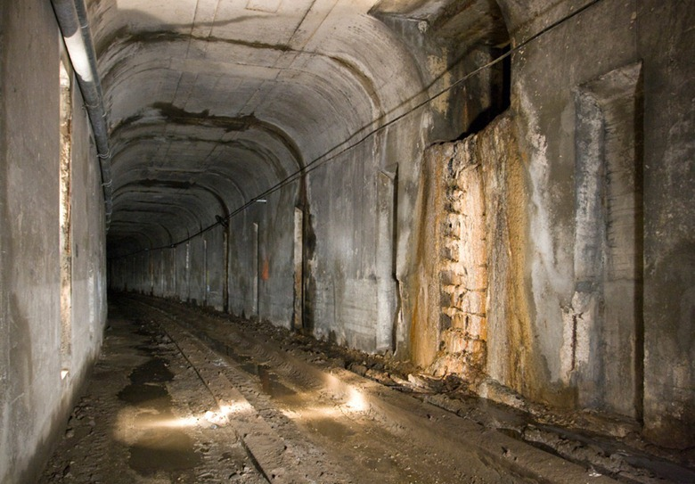

The door leads into an underground tunnel system.
You follow it and come out into a cornfield with a spooky shack
Do you check it out?

Check the shack for some water to cool the engine
Nope, let's keep walking
tunnel
shack